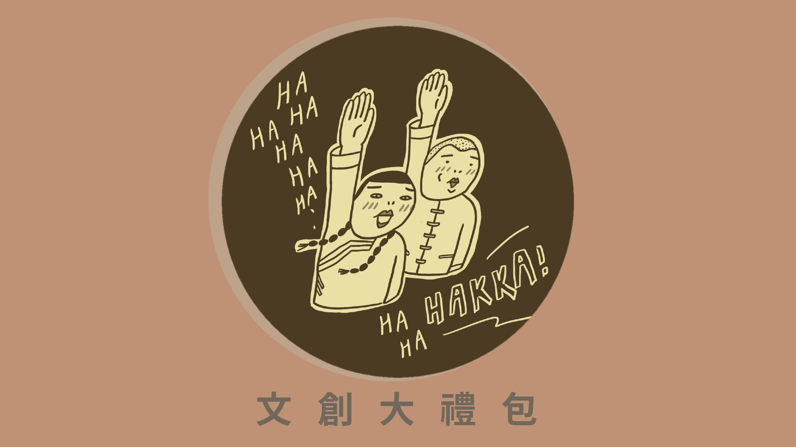
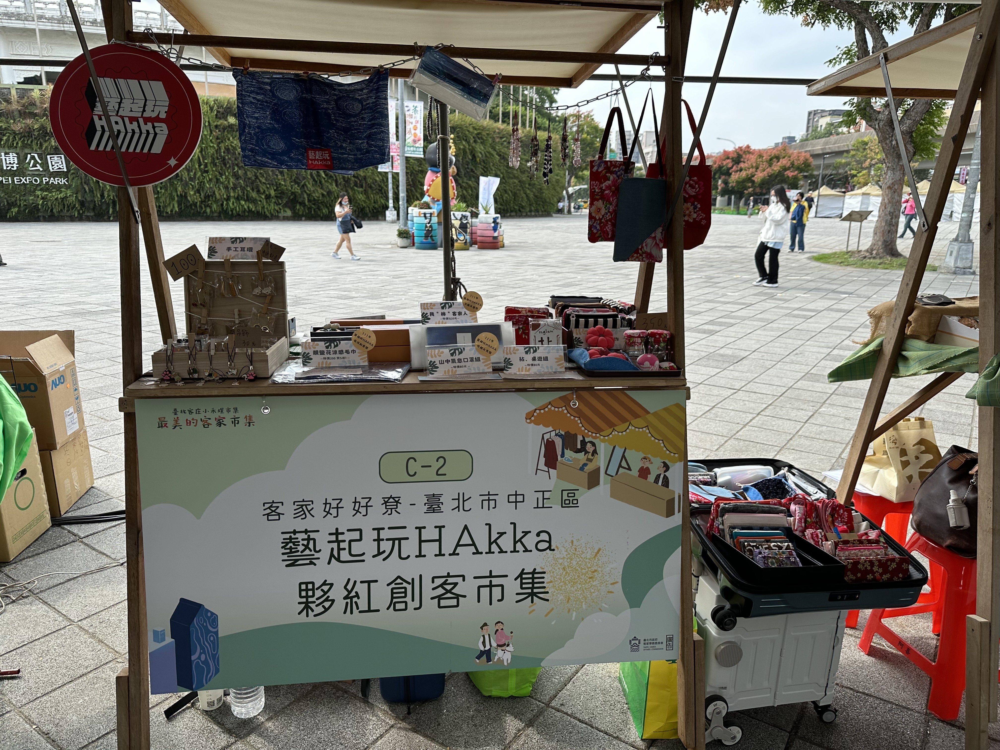
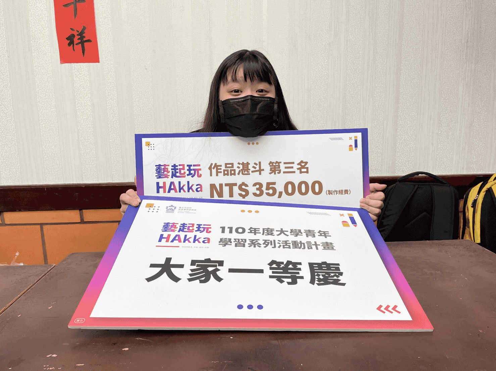

專案簡介
從參賽者到協作者，我與「藝起玩 HAKKA」的緣分延續了好幾年。這不只是一場競賽，更是一段用設計與文化對話的旅程。 專案內容橫跨文創商品設計、角色 IP 開發、以及活動官方網站的建置。
背景與理念
「藝起玩 HAKKA」是由客家委員會舉辦，鼓勵青年以設計、藝術與創意詮釋客家文化的系列活動。我最初以參賽者身分參加競賽，並獲選為得獎團隊之一。
有感於許多文化在傳承上遭遇年代隔閡，造成美好傳統的遺失，我們希望藉由自身的力量，打破此困境。 以流行元素結合親和力高的文具商品，將客家文化帶入年輕族群的生活日常中。
「客家味，也可以很酷、很文青，甚至非常時尚。」
我們希望大眾對於「客家文化」的印象不再只是花布、藍染等傳統符號，而是能透過幽默的插圖設計，看見文化的另一種可能性。
文創大禮包設計
與「怪奇美少女」合作，透過她獨特的角色插畫風格，我們發展出一系列融合客家元素的文創禮包。 每一項商品皆由我們自行發想繪製，並與印刷廠商合作製作。

-
明信片
將客家小炒的食材與配料（豬肉、魷魚、豆干、芹菜、辣椒等）整齊排列，以清新雜誌風重新演繹經典料理，讓「食」成為視覺的藝術。 -
帆布袋
三位女子身穿傳統藍衫，戴上墨鏡、擺出浮誇模特兒姿勢，融合傳統與時尚。袋上搭配客語「派頭」一詞及音標（pai-teuˇ，意為時髦），創造出今昔交錯的趣味感。 -
貼紙組
將各種客家形象角色化，轉化為能貼在生活用品一隅的療癒小夥伴。 -
徽章
以新丁粄為設計靈感，發展出可愛的娃娃角色，並將其圓臉設計成活潑可愛的圓形徽章。 -
資料夾
將經典客語歌曲《客家本色》歌詞轉化為漫畫形式，搭配跳色構圖，讓老歌也能擁有青春活潑的新表情。
官方網站製作
除了參賽，我有幸承接了 2024與2025 年度藝起玩 HAKKA 官方網站的整體製作工作。 網站採用 GitHub Pages 架設，以清爽風格與清楚分類，呈現活動成果與參賽作品，讓更多人能線上感受青年創作與客家文化之間的火花。
網站連結：藝起玩 HAKKA 活動官網
市集與活動參與
活動結束後，我仍持續參與延伸活動，包含以學長姊身分回到活動現場協助「小禾埕市集」的攤位佈置與導覽。 這段經驗不只是創作與設計，更是文化與連結的累積，讓我看見設計如何參與在地、延續記憶，也打開了我在未來創作上的更多想像。


{kind=link}
{kind=link}
{kind=link}
{kind=link}
{kind=link}
{kind=link}
{kind=link}
{kind=link}
{kind=link}